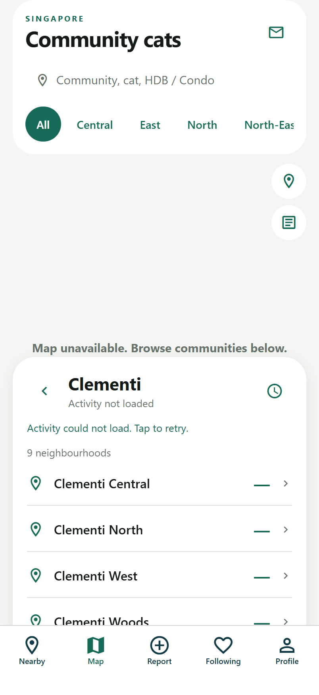
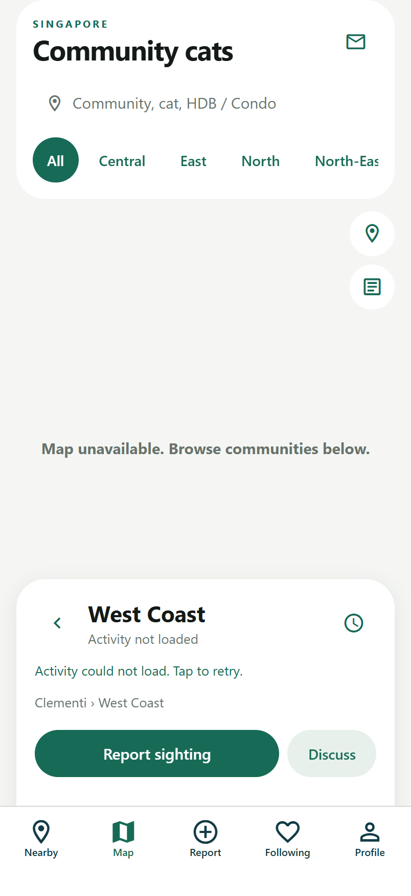
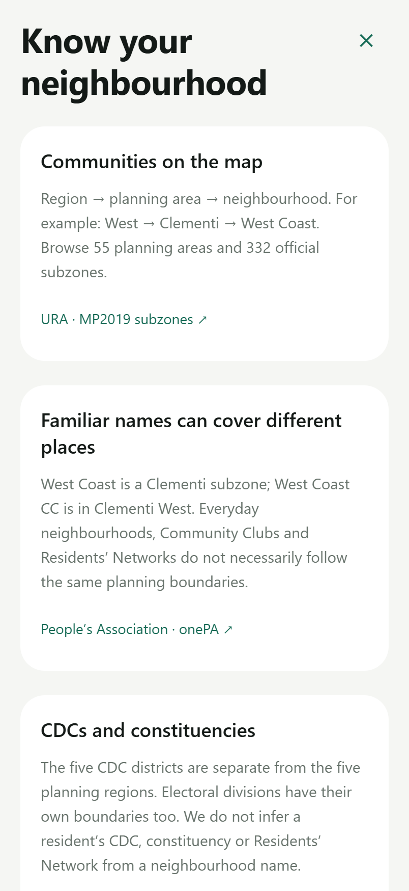

从金文泰，走进西海岸
0.2.1 增量设计记录。主视觉延续已确定的原生绿色与奶油白。地图保留规划区入口，增加邻里层及中文搜索；图标源文件不含圆角，由 iOS 应用系统遮罩。
以下为实际网页回归截图：当前预览未连接服务端，展示错误恢复状态；网页不提供 Apple Maps，也不能验证 iPhone 的 Liquid Glass。真实猫记录、地图与系统材质仍以设备验收为准。
图标资源与生成记录 · 官方依据及实现说明

金文泰 → 9 个邻里规划区和邻里保持层级
西海岸 · West Coast报告、讨论及返回上级社区
认识你的社区说明与官方来源集中展示